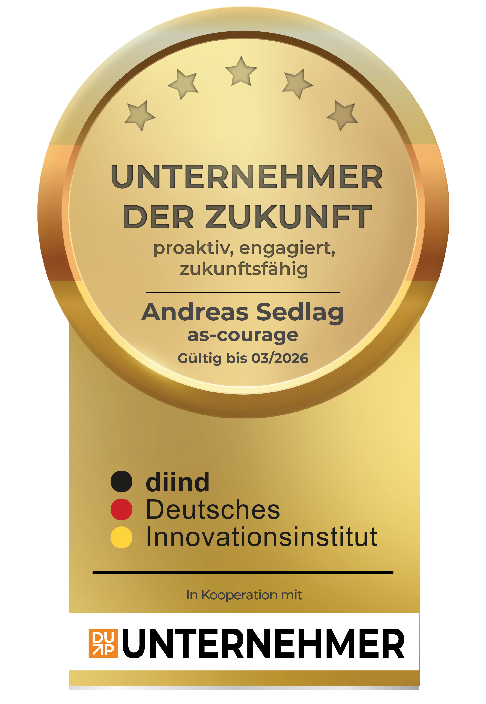
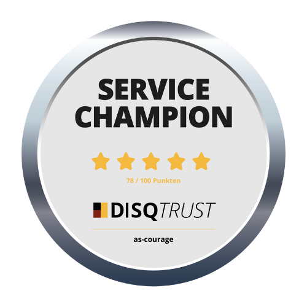
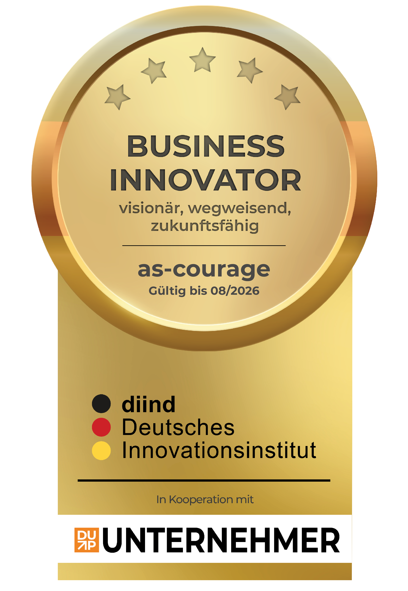

Wertschätzung
Das Wort "Wertschätzung" ist bekannt. Doch wenn jemand erkären soll, was es bedeutet, wird es schon schwieriger. Und weil Wertschätzung ein wichtiges Bedürfnis ist, nimmt dieses Thema einen zentralen Platz in meiner Arbeit ein.
Wofür ich stehe
as-courage steht für klare Kommunikation, lebendige Lernräume und eine Arbeitsweise, die Menschen ernst nimmt. Entwicklung braucht Wissen, Beteiligung, Selbstreflexion und manchmal auch den Mut, einen Schritt anders zu gehen als gewohnt.
Steckbrief ansehenHaltung
Gute Lernräume entstehen durch Klarheit, Vertrauen und Beteiligung. Menschen sollen sich einbringen, Fragen stellen, Unsicherheit zeigen und neue Handlungsmöglichkeiten ausprobieren können.
Das Wort "Wertschätzung" ist bekannt. Doch wenn jemand erkären soll, was es bedeutet, wird es schon schwieriger. Und weil Wertschätzung ein wichtiges Bedürfnis ist, nimmt dieses Thema einen zentralen Platz in meiner Arbeit ein.
Teams entwickeln sich besser, wenn Menschen wirklich jede Fragen stellen können, Fehler ansprechen, Ideen einbringen und Verantwortung übernehmen können, ohne Abwertung oder Bloßstellung befürchten zu müssen.
Kommunikation, Führung und Zusammenarbeit brauchen Haltung. Dazu gehören Klarheit, Selbstreflexion, Respekt und eine diskriminierungssensible Aufmerksamkeit für unterschiedliche Erfahrungen und Perspektiven.
Auszeichnungen
Auszeichnungen ersetzen keine gute Zusammenarbeit. Gleichzeitig zeigen sie, dass Qualität, Service, Innovation und Zukunftsorientierung auch von außen wahrgenommen werden.

Auszeichnung
Auszeichnung des Deutschen Innovationsinstituts für Nachhaltigkeit und Digitalisierung. Sie verweist auf Zukunftsorientierung, Engagement und eine bestandene Prüfung.

Service-Qualität
Die Auszeichnung würdigt Service-Qualität, digitale Erreichbarkeit, Übersichtlichkeit und Kund*innenorientierung.

Innovation
Anerkennung für Mut, neue Wege zu gehen, Zukunft zu gestalten und Themen wie Digitalisierung und Künstliche Intelligenz in Bildungs- und Führungsarbeit mitzudenken.
Vielfalt & Verantwortung
Die Unterzeichnung der Charta der Vielfalt ist für as-courage kein Schmuckelement. Sie passt zur täglichen Arbeit: Menschen sollen mit unterschiedlichen Erfahrungen, Perspektiven und Lebensrealitäten respektvoll beteiligt werden.
In Trainings, Workshops, Coaching und Vorträgen bedeutet das: diskriminierungssensibel arbeiten, Sprache bewusst nutzen und Unterschiedlichkeit nicht als Störung, sondern als wichtige Ressource ernst nehmen.
Arbeitsverständnis
Meine Arbeit soll Menschen stärken, nicht beeindrucken. Deshalb verbinde ich klare Struktur, Humor, Erfahrung und handlungsorientierte Methoden mit einer Haltung, die Beteiligung, Respekt und Verantwortung ernst nimmt.
Nächster Schritt
Wenn Sie ein Training, einen Workshop, ein Coaching oder einen Vortrag planen, klären wir gemeinsam Ziel, Zielgruppe und einen passenden Rahmen.